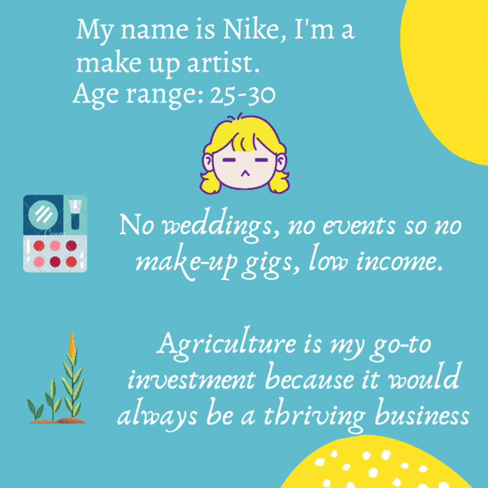
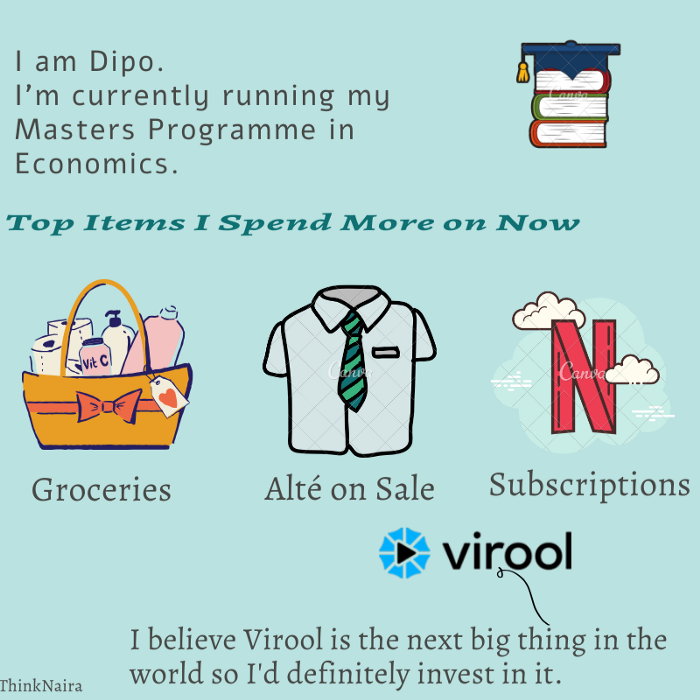
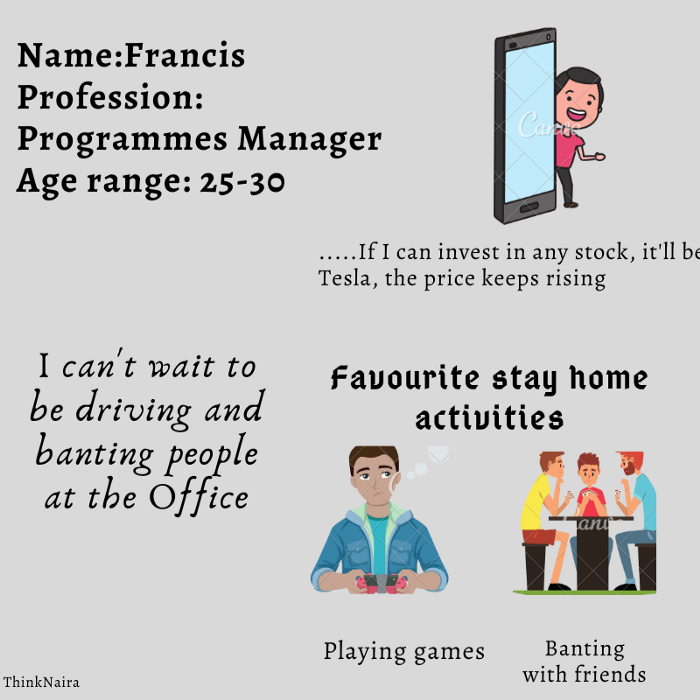

SAVINGS, EXPENSES AND LIFE AS WE KNOW IT (COVID — 19)…
May 4, 2020
So, it’s been a minute, a minute of several occurrences (not so good events) the most significant being the COVID-19 pandemic and all of the ripple effects that came with (economic meltdown, job losses) and of course staying home.
Well, it’s been well over a month of staying home and this has taken a toll on both corporate and individual cash flow patterns. Small and large businesses are having to cope with loss of revenue. Routine activities, savings and spending pattern has changed for an average person and for most of this article, I’ll be profiling a number of people who mentioned major variations in their day to day activities.
Also, I highlighted some points that might help in managing financial stress during this period.
Let's go!

Hugging my friends, eating out/trying new places, going to the cinema, watching football and traveling.
1. Brief introduction about yourself?
I’m Dayo, a medical doctor and a serial entrepreneur. I’m in the 25–30 age range.
2. What kind of spender would you say you are?
I’ll classify myself a pretty moderate spender.
3. Top 5 things you usually spend more money on prior ‘Rona times?
I usually spend more on loan servicing, fuel, food, data, family needs.
4. Has your revenue/income been affected in any way by COVID-19?
A whole lot to be honest.
5. What significant changes in spending and savings have you experienced so far?
Well, revenue has drastically reduced, and I’ve gone out less. So, expenditure has changed to food, family needs, data, fuel and savings (because I’m really really reluctant to spend nowadays).
6. Have you been to save more since we basically stay home now?
Yea, I’ve been able to save a lot.
7. If you could invest big time in any company right now, what company would it be and why?
None. I don’t believe the investment market is clear and certain enough for investments.
8. What’s your favourite stay-home activity at the moment?
Reading, taking online courses, in my mind gyming and exercising though that hasn’t physically manifested.
9. What activity can’t you wait to get back to post COVID-19?
Hugging my friends, eating out/trying new places, going to the cinema, watching football and traveling.
I can’t wait to get back to work fully, this money won’t make itself.
1. Brief introduction about yourself?
I’m Olanike, I am a Make-up Artist. I fall between the 25–30 age range.
2. What kind of spender would you say you are?
I’m usually a moderate spender.
3. Top 5 things you usually spend more money on prior ‘Rona times?
I typically spend more Food and Transportation.
4. Has your revenue/income been affected in any way by COVID-19?
A whole lot actually. No weddings, no events of any kind, so no gigs.
5. What significant changes in spending and savings have you experienced so far?
I now usually spend only on food, data subscription, electricity bills.
6. Have you been to save more since we basically stay home now?
Since my income hasn't increased in any way, there’s no rational reason to increase my savings.
7. If you could invest big time in any company right now, what company would it be and why?
I would say any Agriculture business because it’s an all-time thriving business, pandemic or no pandemic.
8. What’s your favourite stay-home activity at the moment?
I’m enjoying reading at the moment and also hanging with my housemates.
9. What activity can’t you wait to get back to post COVID-19?
Getting back to work fully, this money won’t make itself.
I would definitely invest in Virool, a programmatic video marketing platform. I believe COVID-19 marks the end of the Industrial age and Virool is just the next big thing.
1. Brief introduction about yourself
I’m Dipo and I am currently running my Master’s Degree.
2. How would you categorize your spending?
I’m usually more of a frugal spender
3. Top 5 things you usually spend more money on prior ‘Rona times?
Usual grocery, A very authentic branded clothing once a month.
4. Has your revenue/income been affected in any way by COVID-19?
Not at all, still constant.
5. Top 5 items you spend more on now?
Groceries and subscriptions, authentic clothing on sale.
6. Have you been to save more since we basically stay home now?
Yes, a whole lot.
7. If you could invest big time in any company right now, what company would it be and why?
I would have said Zoom but I’ll go with Virool, a programmatic video marketing platform. I believe COVID-19 marks the end of the Industrial age and Virool is just the next big thing.
8. What’s your favorite stay-home activity at the moment?
I would say working. Pretty workaholic thing to say
9. What activity can’t you wait to get back to post COVID-19?
Working outside of home, in my office.
2. Brief introduction about yourself?
My name is Francis and I work as a Programmes Manager in Africa’s largest innovation centre. I fall between the 20–30 age range.
2. What kind of spender would you say you are?
I’m a pretty moderate spender
3. Top 5 things you usually spend more money on prior ‘Rona times?
Data, Food, Family expenses, Business expenses, Transportation.
4. Has your revenue/income been affected in any way by COVID-19?
So far, It hasn’t changed at all, my employer rocks.
5. What significant changes in spending and savings have you experienced so far?
Data, Food, Business expenses, Household items, Fuel
6. Have you been to save more since we basically stay home now?
No, my savings has pretty much remained the same.
7. If you could invest big time in any company right now, what company would it be and why?
Tesla. Stock is rising and would keep rising
8. What’s your favourite stay-home activity at the moment?
Playing game and banting with my housemates.
9. What activity can’t you wait to get back to post COVID-19?
Driving and banting people at the office.
SO WHAT NEXT?
I think we would be on the same page to say that subscriptions (data, movies & music) and food seems to be where cash is mostly pumped into now it doesn’t seem like it would change soon.
Impact of the COVID-19 on the world economies is predicted to have economic downturns worse than The Great Depression.The pandemic has the potential to give rise to food security crisis in Africa. It is also worthy to note that oil prices (Brent Crude)upon which Nigeria’s revenue is mostly dependent on has been crashing for most part of the year.
So, it’s safe to say that this is not the time to be a spendthrift. Below are few point that could be useful for our personal finances during this time:
1. Create an Emergency Fund: The staying home rule might have been relaxed but it’s economic effects is yet to take full effects on revenues, more of the effects would be seen in the later part of the year. I believe it’ll be worth it to have funds set aside for whatsoever might come along. A good time to increase your liquid reserves by setting aside more of your revenue for “just in case” money.
2. Prioritize Your Bills: Prioritize what is important to keep you safe — housing, food, basic utilities, your car, and anything else you need.
3. For Small Business Owners: Engage your vendors & suppliers for help, negotiate better pricing or payment terms and don’t forget to ask for an increase to the services/goods they provide you for a period of time at no additional cost.
Let Your Creditors know About Your Financial Situation